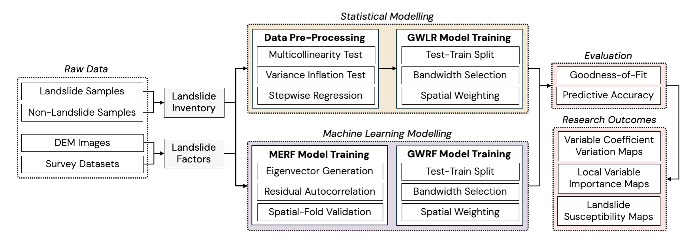

Research Methodology
Existing Methodology Approaches
Landslide susceptibility assessment is an emerging research area of both importance and urgency and several approaches and models have been explored in scientific literature. These models can be generally categorized into four categories: expert-based, physically-based, statistical and machine learning-based.
Physically-based models are of the highest utility in theory, but such models often face challenges and uncertainties for real-world application due to the limited availability of spatially differentiated geotechnical data.
Compared to physically-based models, expert-based models are less data-intensive as they are developed with the expert knowledge of local interactions between landslide occurrences and its controlling factors. Due to its qualitative nature, expert-based models often lack objectivity and reproducibility, and are not commonly used in scientific research.
Statistical landslide susceptibility modelling seeks to estimate the spatial likelihood or relative spatial probability of spatial units to coincide with future landslide occurrence. These models have been widely adopted for practical application due to their relatively lower input data demand (than physically based models) and quantitative modelling output (which expert-based models lack).
Machine learning models have emerged as promising alternatives to statistical models due to their flexibility and high predictive accuracy. They are favored for their ability to solve nonlinear problems, improve performance across various classifiers, and capture complex relationships between variables.
Nevertheless, previous research has demonstrated that each model type has its unique strengths and limitations, and choosing an appropriate model depends largely on various factors, such as interpretability, generalisability, and the specific research objectives.
Spatial Nonstationarity and Spatial Heterogeneity
Many models using large spatial datasets for landslide risk prediction often overlook spatial nonstationarity. This occurs when global models assume uniformity in variable relationships across space, ignoring local variations. Failing to address spatial nonstationarity limits a model’s ability to capture spatial autocorrelation, where nearby values are more similar than those farther apart. Consequently, such models lack adaptability to inherent spatial properties, potentially affecting their accuracy and applicability in complex environments.
In 1996, Fotheringham, Charlton, and Brunson highlighted the impact of spatial nonstationarity on regression parameter estimates in geospatial datasets. They argued that relying on a global estimate of relationships can obscure important geographical variations within the data. Models not calibrated to underlying spatial properties often produce less realistic inferences and overlook underlying spatial structures. This issue, known as spatial nonstationarity, arises when a global model cannot accurately represent the relationships between variables due to local spatial variations, violating the assumption that these relationships remain constant across space.
Research Objectives
Our study focuses on comparing the performance and applications of statistical and machine learning models in landslide susceptibility assessment. In particular, our study compares global models and their spatial derivatives in incorporating spatial relationships into landslide susceptibility modeling, guided by two key questions.
Explanatory Modelling
What are the (i) landform properties and (ii) human-environment interaction factors affecting landslide susceptibility? Is landslide susceptibility independent geospatially?
Is landslide susceptibility independent geospatially?
Does the contribution landslide factors vary across the study area?
Predictive Modelling
How can spatial relationships and local dependencies be accounted in generalised statistical and machine learning models?
Do spatially-calibrated models perform better predictions than generalised baseline models?
Research Methodology

Model Overview
Geographically Weighted Regression (GWR)
In practice, relationships between variables may be nonstationary. However, traditional regression models assume that predictors and outcome variables are spatially homogeneous, or stationary.
Ordinary least squares (OLS) linear regression is a standard global modelling technique that cannot detect nonstationarity, and thus using it may obscure regional variation in the relationships between predictors and the outcome variable.Geographically Weighted Regression (GWR) is a local regression framework proposed by Fotheringham, Charlton and Brunson. This model is suited for spatial analysis as it extends traditional and global regression frameworks such as Ordinary Least Squares (OLS) by integrating spatial weights and generating local-level model statistics.
Moran’s Eigenvector Random Forest (MERF)
Building upon the concept of Moran’s Eigenvector Maps (MEMs), Benito introduced a spatial RF model incorporating spatial dependency. This model, termed Moran’s Eigenvector Random Forest (MERF) in this study, first generates MEMs from a weight matrix. MEMs have two important properties. First, they are orthogonal unit vectors that maximize Moran’s I, a measure of spatial autocorrelation. Second, their associated eigenvalues are equal to the Moran’s I coefficients, describing the strength of local spatial structures. MERF hence uses MEMs as variables of spatial predictors when fitting a standard, non-spatial RF model. Directly incorporating these spatial predictors during model training enables MERF to integrate underlying spatial dependence in the data that a standard, nonspatial global RF would otherwise ignore. Chiefly, the MERF model allows RF to learn patterns related to spatial autocorrelation that would improve its ability to model spatially structured phenomena like landslides.
Geographically Weighted Random Forest (GWRF)
Proposed by Georganos and Kalogirou, GWRF is the spatial disaggregation of the classic RF model into an ensemble of local models. This formulation is based on the principles of the Geographically Weighted Regression (GWR) framework wherein a global process is decomposed into several local submodels. This methodology implies that spatial interactions are more effectively captured through an ensemble of local models rather than incorporating numerous spatial predictors into a single global model, as seen in the MERF approach.
References
Cascini, L.: Applicability of landslide susceptibility and hazard zoning at different scales. Engineering Geology. 102, 164–177 (2008).
Frattini, P., Crosta, G., Carrara, A.: Techniques for evaluating the performance of landslide susceptibility models. Engineering Geology. 111, 62–72 (2010).
Guzzetti, F., Carrara, A., Cardinali, M., Reichenbach, P.: Landslide hazard evaluation: A review of current techniques and their application in a multi-scale study, Central Italy. Geomorphology. 31, 181–216 (1999).
Kuriakose, S.L., van Beek, L.P., van Westen, C.J.: Parameterizing a physically based shallow landslide model in a data poor region. Earth Surface Processes and Landforms. 34, 867–881 (2009).
Ruff, M., Czurda, K.: Landslide susceptibility analysis with a heuristic approach in the eastern alps (Vorarlberg, Austria). Geomorphology. 94, 314–324 (2008).
Steger, S., Kofler, C.: Statistical Modeling of Landslides: Landslide Susceptibility and Beyond. In: Pourghasemi, H.R. and Gokceoglu, C. (eds.) Spatial modeling in GIS and R for earth and environmental sciences. pp. 519–546. Elsevier, Amsterdam, Netherlands (2019).
van Westen, C.J., Rengers, N. & Soeters, R. Use of Geomorphological Information in Indirect Landslide Susceptibility Assessment. Natural Hazards 30, 399–419 (2003).